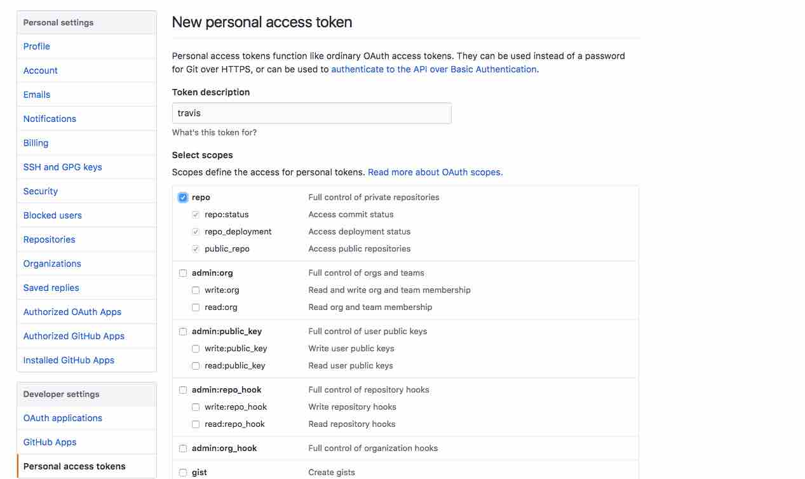
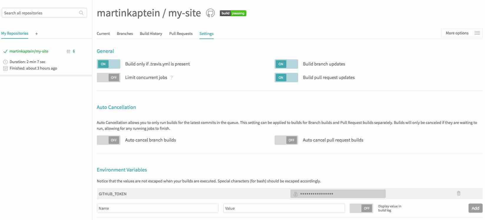

May 26, 2017
By Martin Kaptein
Using Hugo with Travis CI on GitHub Pages
Introduction
In this blog post I will show how to build your static website with Hugo and deploy it to GitHub pages automatically using Travis CI.
This can have a lot of benefits: For example, you can fix typo's directly from the Github web interface from your phone (without editing raw HTML).
As a matter of fact this website is build this way: The source, located at github.com/martinkaptein/my-site will be build and pushed into github.com/martinkaptein/martinkaptein.github.io with Travis CI.
Due to various reasons I decided to use different repositories rather than one repo with different branches.
Also, I kept the whole setup as minimal as possible. Hence, no bash script or travis command line tools are required.
Travis CI setup
travis.yml
First of all, you will need to add a .travis.yml file to the root of your source directory. Please be aware that your operating system may hide the file.
Paste this into your .travis.yml file and edit it as necessary (instrucions provided).
language: go
go:
- master # This uses automatically the latest version of go
install:
- go get github.com/spf13/hugo # This provides the latest version of Hugo to Travis CI
script:
- hugo # This commands builds your website on travis
deploy:
local_dir: public # Default static site output dir for Hugo
repo: <yourusername>/<yourusername>.github.io # This is the slug of the repo you want to deploy your site to
target_branch: master # GitHub pages branch to deploy to (in other cases it can be gh-pages)
provider: pages
skip_cleanup: true
github_token: $GITHUB_TOKEN # This is the authentication which you will setup in the next step in travis-ci dashboard
email: yourmail@mail.com
name: "Your username"
on:
branch: master
GitHub authentication
Let's setup the git authentication.
Generate a Personal Access Token from this GitHub page: github.com/settings/tokens.
Please make sure to check repo - full control of repositories (the rest you don't need to enable).

Generating a GitHub access token for Travis CI
Copy the secret key to your clipboard and head over to https://travis-ci.org/.
Enable your source repository and turn the following options to on:
- Build only if .travis.yml is present
- Build branch updates
- Build pull request updates
Then, scroll down and add a environment variable:
Set Name to GITHUB_TOKEN and paste your secret key (from the clipboard) to the Value field.
When you added it, it should hide the value and keep it secure (it is encrypted), according to the travis-ci docs.
The settings should look like this:

My Travis CI dashboard settings.
Push to your source repo
Now, it's time to see Travis CI in action: Just git add .travis.yml, commit and push.
The build process should start automatically and push to your GitHub Pages repo.
Summary
To sum up, this is a very minimal travis-ci setup. It's worth noting that Travis CI will always check for and download the latest version of go and hugo.
To speed the process up, you could move the hugo binaries to your source repo. But for the sake of simlicity I have omitted these options.